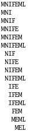

TLSMD: Documentation
TLSMD is Open Source
TLSMD is a Open Source project released under the Artistic License. It is hosted at SourceForge as a sub-project of the Python Macromolecular Library. We have not made any official release of the TLSMD source code yet, but you may check out the source using anonymous Subversion, or browse the source code using on the web by visiting this link to the svn repository. This program is a ongoing research project of Jay Painter and Ethan Merritt. We can be contacted at:
Jay Painter <jpaint _at_ u.washington.edu>
Motivation
TLS (Translation/Libration/Screw) is a mathematical model that predicts the local positional displacement of atoms in a crystal structure based on an underlying assumption that each atom acts as a member of a rigid body that is displaced normally about a mean position. This displacement is seen crystallographically as non-spherical electron density at the atomic positions. The net displacement results both from actual vibration of the molecule in the crystal and from the static disorder within the crystal lattice that results from trapping different microconformers of the molecule in different unit cells making up the crystal lattice. The TLS formalism was originally developed to confirm rigid body displacement for small molecule crystallography, which yields high resolution data and precise anisotropic thermal parameters. Its success in predicting the thermal parameters for small molecules makes it tempting for use in macromolecular crystallography where it could potentially be used to find domain and loop flexibility in proteins; however, the challenges in applying the TLS model to macromolecular structures are different than those encountered with small molecules. Most macromolecular structures do not diffract to a high enough resolution to solve for individual atomic anisotropic thermal parameters (six per atom), so isotropic thermal parameters(one per atom) are used instead. The reduced information content of the isotropic thermal parameters is partially mitigated by the large number of atoms available in a macromolecular structure. The thermal parameters of protein atoms will always contain significant magnitude which deviates from the rigid body ideal due to the fact that vibrations and conformational changes in proteins are at best approximate rigid body displacements, and the degree to which the thermal parameters of a protein structure will agree with the TLS rigid body model is highly dependent on the quality of the crystal lattice, and conformational flexibility unique to the protein. Therefore, it is reasonable to develop a algorithm to search for such regions as a optimization problem without any preconceived requirements on the quality of the fit to the TLS rigid body model. With this in mind, we have developed a optimization algorithm which, for a given protein chain, finds the optimal partition of the chain into 2, 3, ... N TLS groups along its amino acid sequence.
How Does TLSMD Work?
TLSMD uses a two-stage optimization algorithm to select the optimal 2-group, 3-group, ..., N-group partition of a protein chain into multiple TLS groups. This optimization is performed for each chain in a structure independently, so the TLS groups selected for multiple homologous chains in a input structure may be compared without any bias (unless the structure was refined with NCS restraints or constraints). The first stage of the optimization feeds every possible residue sequence subsegment of the input protein chain to a subroutine which fits TLS model parameters to the refined ADPs of the atoms it contains(Figure 1). A minimum subsegment length is imposed to ensure that there are enough ADP parameters in the subsegment's atoms to unambiguously solve for the TLS model parameters. The subroutine returns the TLS model parameters and least-squares residual of the input structure's refined ADPs vs. TLS calculated ADPs. This information is temporarily stored in a database. Once the database for the chain is complete, it contains every possible sequence continuous TLS group for the chain; all that is needed is to select the TLS groups from the database which best fit the input structure's refined ADPs as measured by the TLS group's least-squares residual. This selection is performed by the second stage of the TLSMD optimization algorithm. This is accomplished by posing the optimization problem as a shortest path minimization over a graph. This problem is similar to finding the shortest driving distance between two cities. The TLSMD graph is constructed by placing a vertex between every residue in the sequence, as well as a source vertex before the first residue, and a destination vertex after the last residue in the chain(see Figure 2). Graph edges are then constructed for each TLS group in the database spanning the vertexes which correspond to the TLS group's residue segment. The edge cost, or weight, is the least-squares residual of the TLS group it represents. Once this graph is constructed, a shortest path algorithm (Constrained Bellman-Ford) is used to find the least cost path from the source vertex at the beginning of the chain sequence to the destination vertex at the end of the sequence. The TLS groups corresponding to the edges used in the minimization path are those presented by TLSMD.
A detailed description of TLS parameters, the equations relating atomic ADPs to TLS parameters, least-squares fitting, and interpretation of TLS rigid body motion may be found in the TLSView Manual.
|  |  |
Figure 1: Construction of all possible subsegments of 7 residue protein sequence MNIFEML with length greator than or equal to 3 residues. |
Figure 2: TLSMD Graph Construction of a 5 Residue Protein |
How-To Use TLSMD Selected TLS Groups in Refmac5 TLS Refinement
The optimized TLS groups calculated by TLSMD from a isotropically refined structure may be used to further refine the structure with the TLS + restrained refinement mode of Refmac5. Given the number of TLS groups you would like to use for each chain, TLSMD can generate a special structure model file (PDBIN also called XYZIN) and TLS tensor file(TLSIN) you can use as input files to Refmac5. These files are generated specifically for Refmac5 refinement by splitting the temperature factor magnitude of each atom between the TLS model and individual atomic temperature factors. Because of this, the TLS model for refinement is different than the one used for motion analysis. To generate these input files, click on the Use Optimal TLS Groups with Refmac5 TLS Refinement web page which is on the root TLSMD Rigid Body Analysis page generated for your structure. After you have generated and downloaded these files, you may use them through either the CCP4i GUI interface(Figure 3), or by writing your own custom shell script which invokes Refmac5(Figure 4).
With most structures, there should be a gradual reduction in R/RFree as more TLS groups are used to partition a protein chain. To illustrate this effect a series of refinements was performed on structure 1X60, a 143 residue protein with a single chain in the asymmetric unit. This structure diffracted to 1.6 Angstroms, and refined to a R/RFree value of 0.175/0.209 using a isotropic thermal model with no TLS groups. Table 1 shows the reduction in R/RFree as the protein chain is partitioned into the 1 to 19 TLS groups calculated by TLSMD.
 |
|
Figure 3: CCP4i configured for TLS refinement using TLSMD generated input files. The PDBIN file generated by TLSMD is 1X60_CHAINA_NTLS6.pdb, and the TLSIN file is 1X60_CHAINA_NTLS6.tlsin. This is a single-chain protein partitioned into six TLS groups for refinement. Notice that the Set initial Bfactors to option is not checked. This is important: if this option is set, it will override the Bfactors calculated by TLSMD and which are in the input PDB file. This is appropriate only if you want to try "pure" TLS refinement, with no refinement of individual B factors.
|
If you prefer using a shell script to run Refmac5, below is a example using the same structure files shown in the example above.
#!/bin/bash
refmac5 HKLIN 1X60.mtz \
HKLOUT 1X60.OUT.mtz \
XYZIN 1X6O_CHAINA_NTLS6.pdb \
XYZOUT 1X60.pdb \
TLSIN 1X6O_CHAINA_NTLS6.tlsin \
TLSOUT 1X60.tlsout <<EOF
MAKE HYDR ALL
MAKE CHECK NONE
LABI FP=F SIGFP=SIGF FREE=FreeR_flag
REFI TYPE REST RESO 20.0 1.6
REFI RESI MLKF
REFI BREF ISOT
WEIG MATR 1.0
SCAL TYPE BULK
SCAL LSSC ANIS
SCAL MLSC
REFI TLSC 10
NCYC 10
MONI MANY
BINS 10
EOF
|
|
Figure 4: BASH shell script for running a Refmac5 TLS refinement using the 1X60_CHAINA_NTLS6.pdb, and 1X60_CHAINA_NTLS6.tlsin files generated by TLSMD.
|
The table below shows the results of TLS refinement of 1X60 using 1 to 19 TLS groups selected by TLSMD.
| ||||||||||||||||||||||||||||||||||||||||||||||||||||||||||||||||||||||||||||||||||||||||||||||||||||||||||||||||||||||||||||||||||||||||||||
|
Table 1: TLS Refinement of structure 1X60 refined with Refmac5's TLS + Biso ADP model. Each row of this table represents the final result of each refinement performed using the TLS 1 to 19 TLS groups partitioned along the single protein chain of this structure by TLSMD.
|